Camps — design review mockups (for Jeffrey’s OK, one screen at a time)
Branch camps, drawn 2026-10-28 over the preview app (fake data; the preview’s “today” is Wed, Apr 21, 2027, inside the April Vacation Camp). Left of each picture is today, right is the mockup; every changed part is outlined in amber. Nothing in the app was changed. Rules: v1.000, v1.003, v1.006, v1.011, v1.012, v1.016, v1.018, v1.022, v1.024, v1.027.
1 · C1 — the roster while “Hide private details” is on
C1 · rule v1.000 · PC, tablet, phone (320 checked)
No Paid column and no “N to collect” while the switch is on; attendance, check-in, the counts that aren’t money and the duplicate warning stay. The “Possible duplicate” tag moves onto the name’s line (phones keep it on the card).
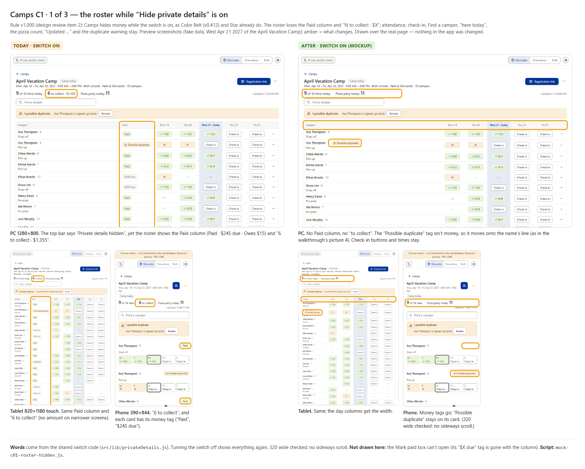
1b · C1 — sharp PC close-up of picture 1
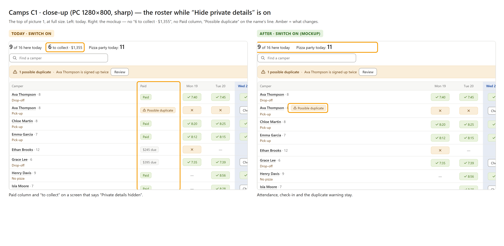
2 · C1 — Camper detail and the ⋯ menu while hidden
C1 (with C8 / C9 order) · PC, tablet, phone
Price and Paying by say “Hidden on this tablet”; Payments becomes “Payment details are hidden on this tablet.” The money items leave the ⋯ menu and the touch “More”, and the “Admin” label goes.
Question: walkthrough picture 02 #5 still showed “Change how they’ll pay” and “Admin” with the switch on. Drawn here as v0.412 / v1.012 say (both gone). OK?
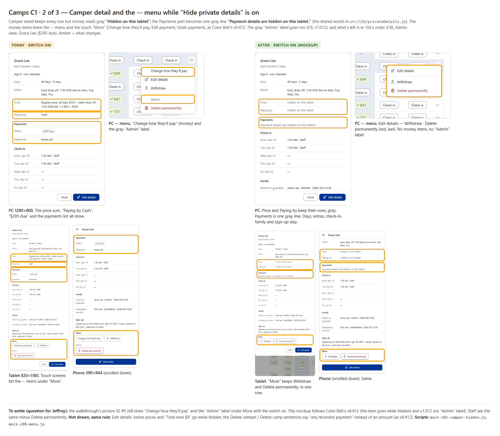
3 · C1 — Compare dialog and Print roster while hidden
C1 · PC and phone; the print sheet as the printer sees it
The Compare dialog’s Paying by, Total and Payment read “Hidden on this tablet” and are never highlighted.
Question: Print roster with the switch on — drop the Paid column (drawn, recommended) or always print it?
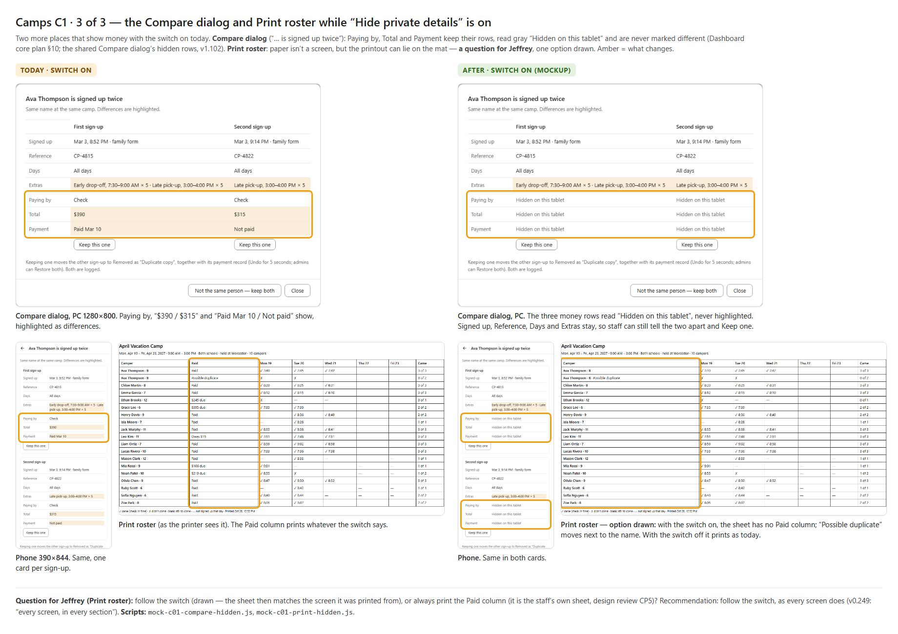
3b · C1 — Edit details, the delete boxes and toasts while hidden
C1 · rule v1.000 · PC, tablet, phone (320 checked)
Edit details hides each extra’s price and “Total now” as “Hidden on this tablet”. Delete camper and Delete camp say “any recorded payment” instead of an amount. The Mark paid toast drops its amount.
Words to approve: “The sign-up and any recorded payment are deleted from April Vacation Camp. This can’t be undone.” · “April Vacation Camp, its 19 campers and 1 removed, and any recorded payment are deleted. This can’t be undone.” · “Leo Kim marked paid”.
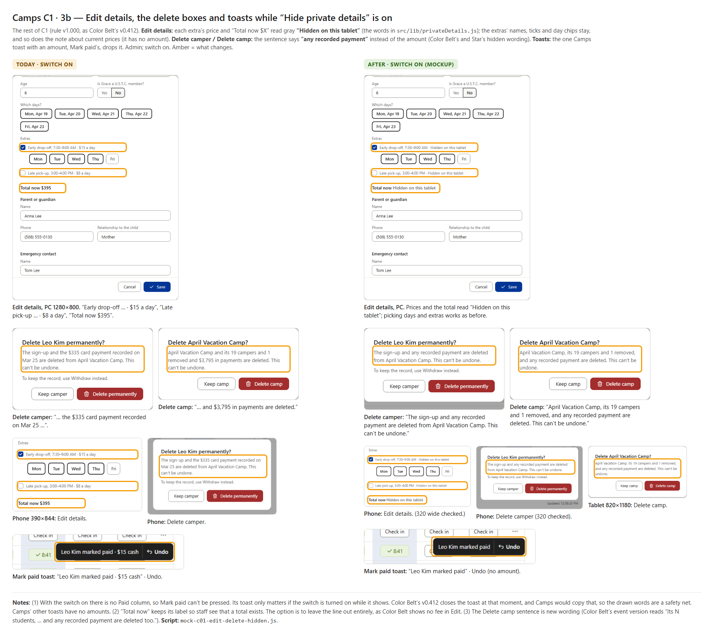
4 · C15 + C16 — “Both schools”; came / didn’t come icons
C15 · rule v1.022 · C16 · rule v1.024
The day grid and its legend use ti-user-check / ti-user-x; the Camps page line on Both says “Both schools”.
Question: Print roster’s ✓ / ✗ characters — leave paper as is (recommended) or print the icons?
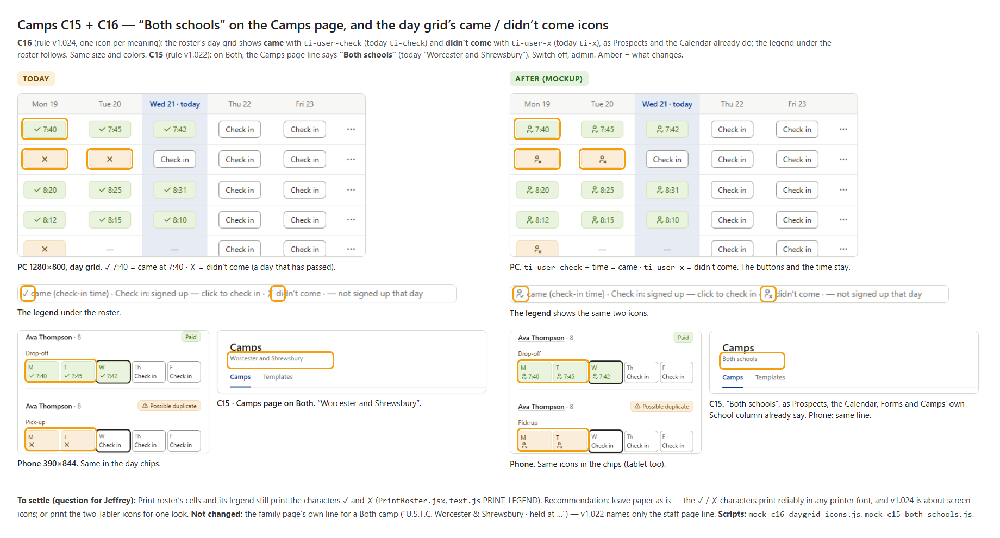
5 · C8 + C9 (+ C16 Restore) — the camper’s ⋯ menu
C8 · rule v1.011 · C9 · rule v1.012 · admin and staff; unpaid, part-paid, paid, duplicate, removed
About the person — money — taking someone off, with a line between; no “Admin” heading; Restore gets its icon.
Questions: keep the word “Review” or say “Review possible duplicate”? Give “Change how they’ll pay” the map’s ti-switch-horizontal (recommended)?
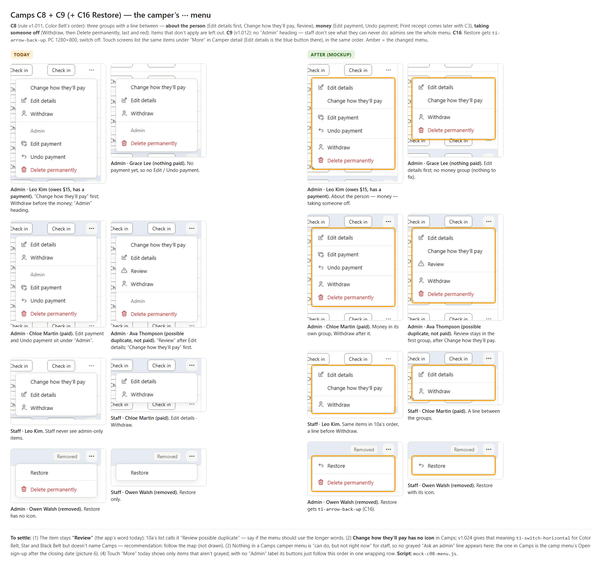
6 · C12 — “Reopen sign-up” becomes “Open sign-up”
C12 · rule v1.016 · admin, staff, phone sheet
Words to settle: “Sign-up open” / “Sign-up open until …” toasts, “… wasn’t opened”, “Open it from the ⋯ menu”, and the staff reason “Ask an admin to open it.” (drawn).
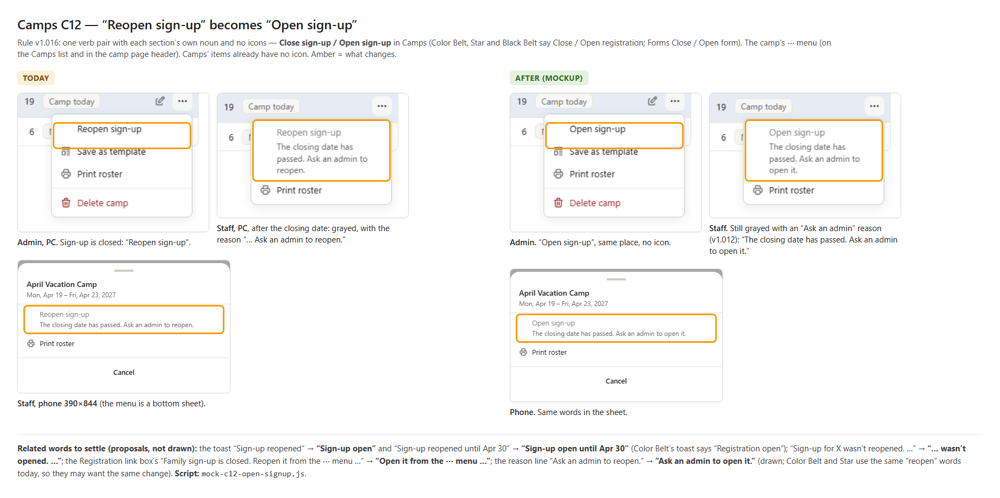
7 · C4 (Edit payment) + C5 — Undo for 5 seconds
C4 first half · rule v1.003 · C5 · rule v1.006
“Payment changed” · Undo (Black Belt’s words); “Camp saved”, “Template saved”, “Changes saved” and Save as template’s toast get Undo. Withdraw and Restore already have it.
Question: a camper’s Undo after a days / member / extras change re-prices at today’s camp prices, so the old total may not come back. Undo anyway (recommended), or no Undo for those changes?
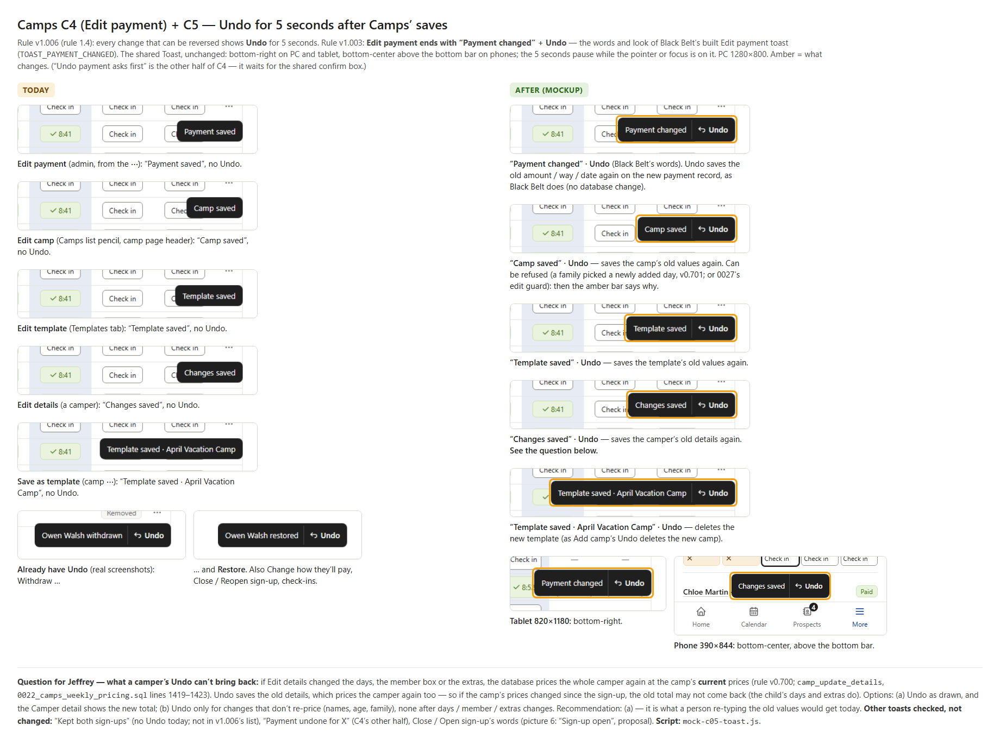
8 · C13 — the shared date picker
C13 · rule v1.018 · Edit camp’s three sign-up dates and Edit payment’s Date paid; the camp-days calendar stays
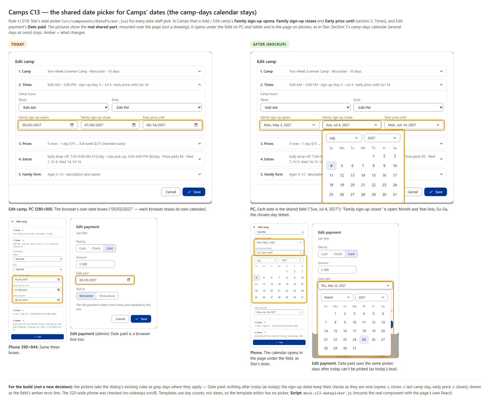
9 · C18 — Save as template keeps the typing
C18 · rule v1.027 · PC, phone, 320
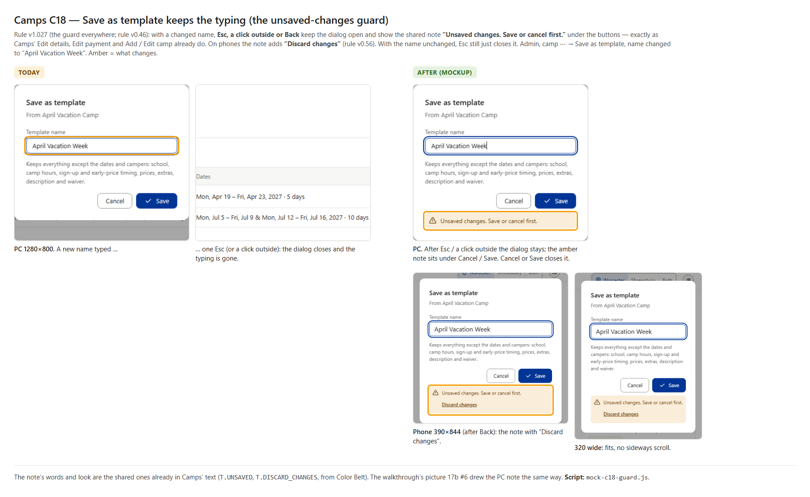